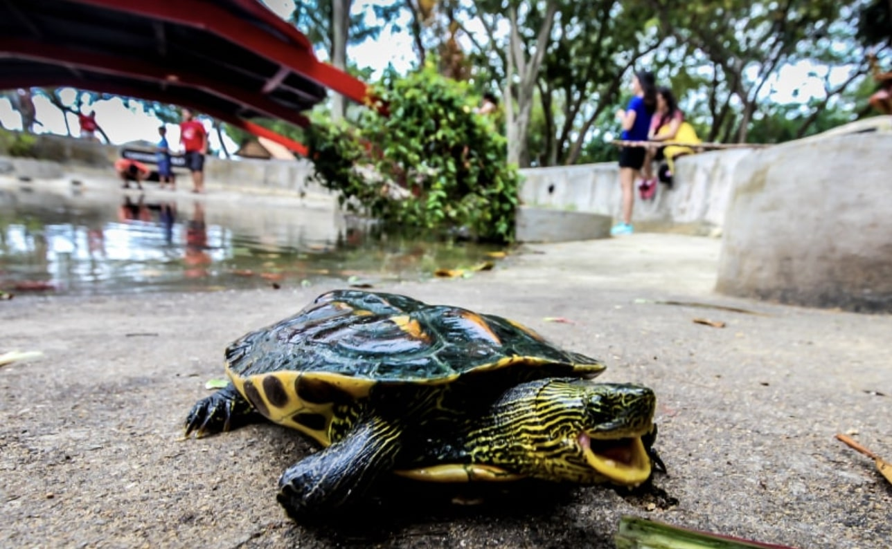
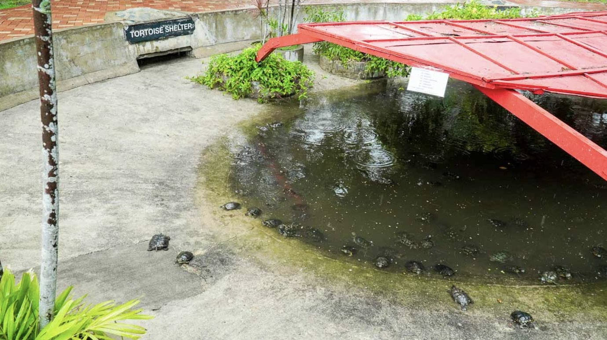
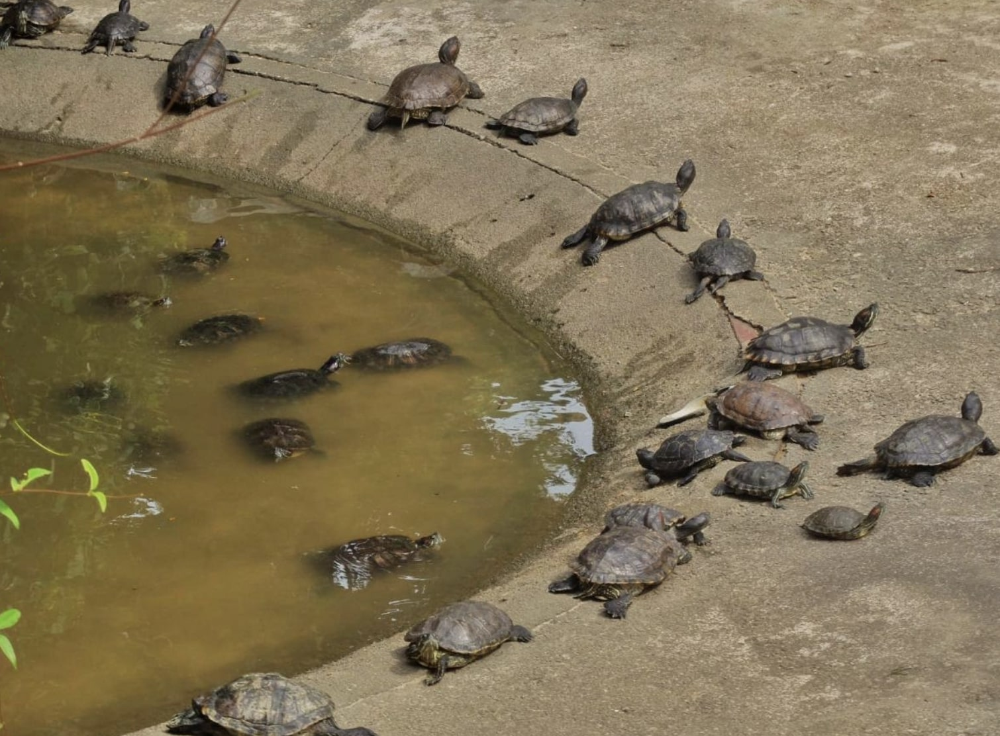
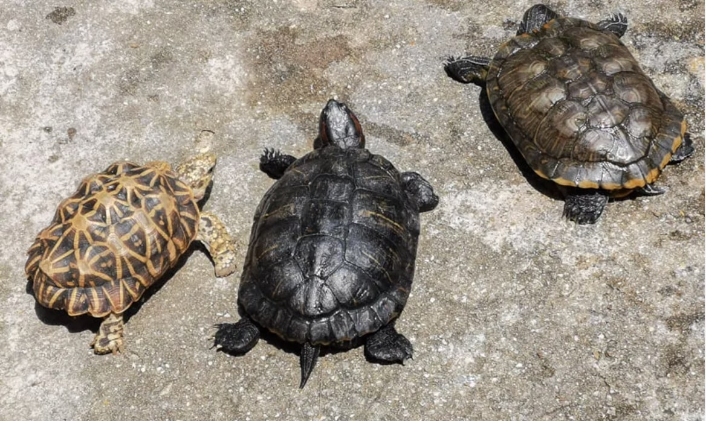

Tortoise Sanctuary

On Tortoise island, not only are there tortoise statues, there are also real-life tortoises! A spot that visitors definitely not want to miss is
the Tortoise sanctuary. Located behind the temple, this so-called sanctuary is actually a sunken concrete pit on the ground where plenty of
tortoises laze around. Look closely and you will realise that there are many different breeds of tortoise to be found in this small sanctuary.

Do be mindful that visitors are not allowed to touch the tortoises.

return to top
return to map